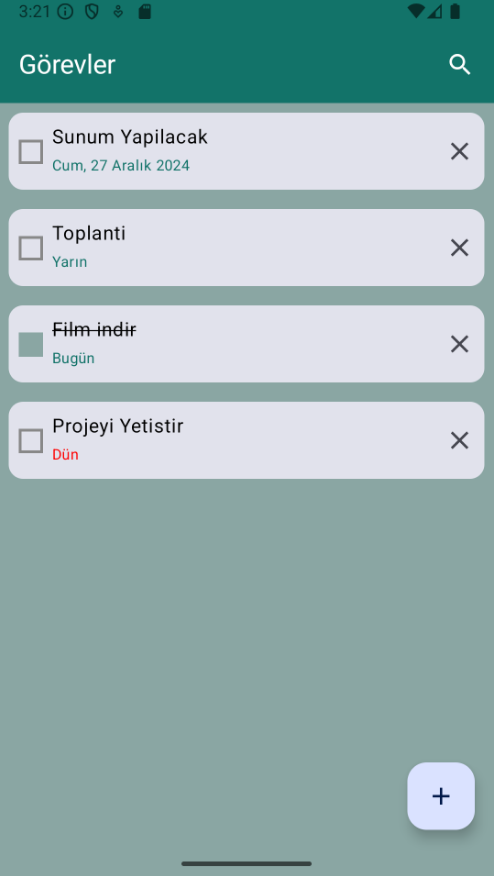
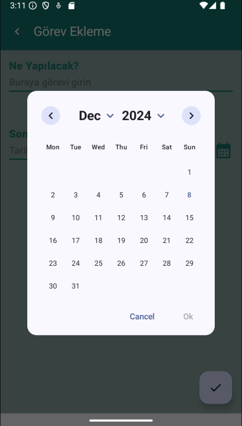

Proje Detayı
Jetpack Compose Task Manager: MVVM Mimarisi ve Firebase Entegrasyonu
Kotlin · Jetpack Compose · MVVM Architecture · Firebase Firestore · Dagger Hilt · Navigation Component · LiveData · Material Design 3

Kısa Özet
Bu projede, Android geliştirmede MVVM (Model-View-ViewModel) mimarisini ve Jetpack Compose ile modern UI geliştirmeyi uyguladım. Firebase Firestore ile gerçek zamanlı veri senkronizasyonu sağlayan bir görev yönetim uygulaması geliştirdim. Dependency Injection için Dagger Hilt kullanarak modüler ve test edilebilir bir yapı kurdum.
Projenin Amacı
Bu çalışmada, Android'de katmanlı mimariyi ve modern UI yaklaşımını birleştirmeyi hedefledim. UI ile iş mantığını ayırarak, veri kaynağı değiştiğinde UI katmanını etkilemeden güncelleme yapılabileceğini gösterdim.
Firebase Firestore'un gerçek zamanlı güncellemelerini LiveData ile UI'a aktırarak reaktif bir akış oluşturdum. Dagger Hilt ile bağımlılıkları merkezi yöneterek, Repository ve DataSource katmanlarını kolayca test edilebilir ve değiştirilebilir hale getirdim. Material Design 3 ile modern ve kullanıcı dostu bir arayüz tasarladım.
Firebase Firestore'un gerçek zamanlı güncellemelerini LiveData ile UI'a aktırarak reaktif bir akış oluşturdum. Dagger Hilt ile bağımlılıkları merkezi yöneterek, Repository ve DataSource katmanlarını kolayca test edilebilir ve değiştirilebilir hale getirdim. Material Design 3 ile modern ve kullanıcı dostu bir arayüz tasarladım.
Mimari & Yapı
Uygulama MVVM prensiplerine uygun olarak Data, Presentation ve Dependency Injection katmanlarına ayrıldı.
Data Katmanı: Firebase Firestore ile veri işlemlerini yöneten GorevlerDataSource ve iş mantığını soyutlayan GorevlerRepository sınıflarından oluşur. Veri modeli Gorevler entity sınıfı ile temsil edilir.
Presentation Katmanı: Jetpack Compose ile oluşturulmuş UI bileşenleri (Anasayfa, GorevEkleme, GorevGuncelleme) ve bu bileşenlerin durumunu yöneten ViewModel sınıfları (AnasayfaViewModel, GorevEklemeViewModel) yer alır. LiveData ile veri akışı sağlanır ve Navigation Component ile sayfa geçişleri yönetilir.
Dependency Injection: Dagger Hilt ile AppModule içinde Repository ve DataSource bağımlılıkları tanımlanır. Bu sayede test edilebilirlik ve modülerlik artar.
Uygulama, görev ekleme, silme, arama ve tamamlanma durumu işaretleme gibi temel CRUD işlemlerini destekler. Tarih formatlaması ile kullanıcı deneyimi iyileştirilir (Bugün, Yarın, Dün gösterimi). Firebase Firestore'un snapshot listener'ları sayesinde veriler gerçek zamanlı olarak senkronize edilir.
Data Katmanı: Firebase Firestore ile veri işlemlerini yöneten GorevlerDataSource ve iş mantığını soyutlayan GorevlerRepository sınıflarından oluşur. Veri modeli Gorevler entity sınıfı ile temsil edilir.
Presentation Katmanı: Jetpack Compose ile oluşturulmuş UI bileşenleri (Anasayfa, GorevEkleme, GorevGuncelleme) ve bu bileşenlerin durumunu yöneten ViewModel sınıfları (AnasayfaViewModel, GorevEklemeViewModel) yer alır. LiveData ile veri akışı sağlanır ve Navigation Component ile sayfa geçişleri yönetilir.
Dependency Injection: Dagger Hilt ile AppModule içinde Repository ve DataSource bağımlılıkları tanımlanır. Bu sayede test edilebilirlik ve modülerlik artar.
Uygulama, görev ekleme, silme, arama ve tamamlanma durumu işaretleme gibi temel CRUD işlemlerini destekler. Tarih formatlaması ile kullanıcı deneyimi iyileştirilir (Bugün, Yarın, Dün gösterimi). Firebase Firestore'un snapshot listener'ları sayesinde veriler gerçek zamanlı olarak senkronize edilir.
Görseller / Ekran Görüntüleri

